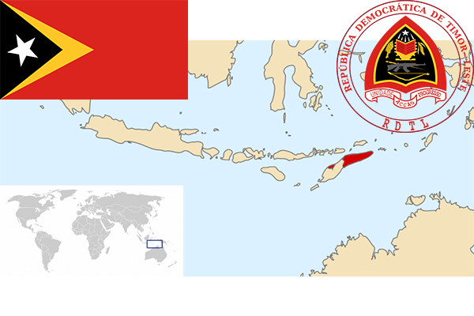

To`liq nomi: Sharqiy Timor Demokratik Respublikasi
Region: Janubiy –Sharqiy Osiyo
Qonunchilik shakli: Respublika
Mustaqillik kuni : 20-may 2002 yil (Indoneziyadan)
Poytaxt: Dili
Maydoni: 15 007 km² (dunyoda 154 -o`rinda )
Chegaradosh davlatlari: Indoneziya
Aholisi: 1 268 671 (dunyoda 158 -o`rinda, 2016 -yil roʻyxat)
Aholi zichligi: 85,3 /km²
Aholining o`rtacha yoshi: 66,65 yil ( 69,0 ayollar, 64,3 erkaklar)
Rasmiy tili: Tetum va portugal tili
Dini: 96,9% katolik, 2,2% protestant, 0,6% Induist,buddist,animist, 0,3% musulmon
Pul birligi: AQSh dollari
Telefon prefiksi: +670
Internet domen: .tl
Xalqaro tashkilotlarga a`zoligi: BMT (2002– yildan)
Dengiz va okeanlarga chiqishi: Banda va Timor dengizlari
YIM: Butun: $ 6,60 mlrd, Jon boshiga: $ 5441 (2014 - yil roʻyxati)
Yirik shaharlari: Dili